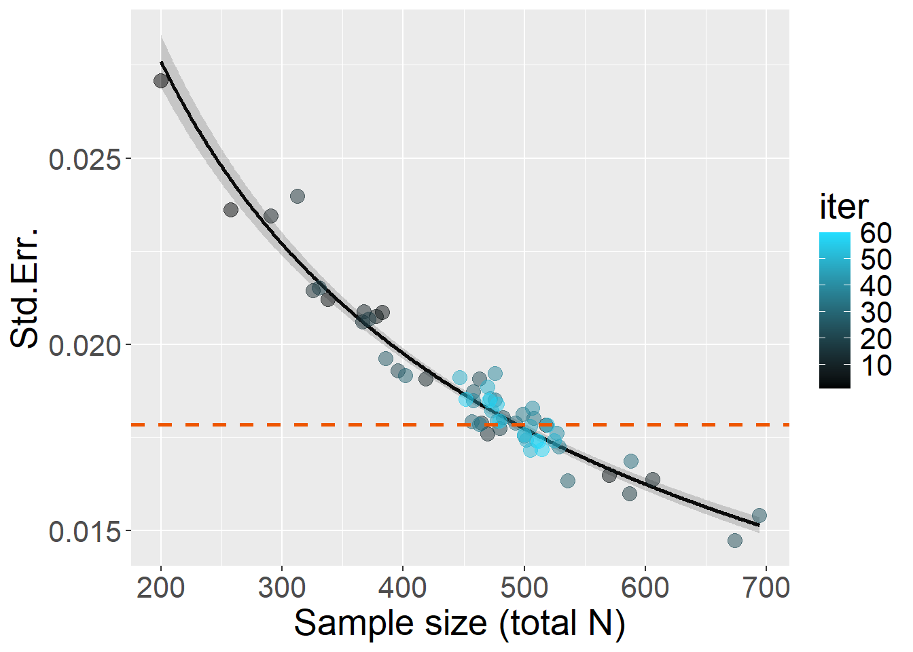

Code
library(effects)
library(ggplot2)
library(toffee) # devtools::install_github("enricotoffalini/toffee")
source("R/StdErr algorithm function.R")
load("R/simulations.RData")
set.seed(0)
library(effects)
library(ggplot2)
library(toffee) # devtools::install_github("enricotoffalini/toffee")
source("R/StdErr algorithm function.R")
load("R/simulations.RData")
set.seed(0)Running a full power simulation can be computationally expensive, especially when the statistical model is complex and there is little prior knowledge about the sample size (or other parameters) required to achieve a desired level of power (e.g., 80%). In two pre-registrations I personally worked on last year, both involving mixed-effects logistic regressions with nested and crossed random effects, a single iteration using a realistic sample size (on the order of hundreds) took around one minute. This meant that running 5,000 iterations on a single core would have taken days. Parallelizing the simulations across 8 cores reduced this to less than one day per scenario, but even then, running a full grid of alternative scenarios becomes prohibitive unless one have powerful servers. This becomes critical when collaborating with others and working under time constraints. This illustrates why a full power simulation is often too costly when the required sample size is unknown or when multiple scenarios must be explored. Complex statistical models, not just simple t-tests, are becoming the norm in real-world psychological research.
To simplify the discussion, let’s assume we are interested in estimating only the required sample size \(N\), while keeping constant other relevant parameters that affect power (e.g., number of trials \(k\), or measure reliability \(\omega\)). However, the procedure presented below can be easily extended to cases where multiple parameters vary simultaneously.
The idea is as follows: although full power simulation is costly, in many cases (though not all), there is a relatively fast workaround for obtaining a sufficiently precise estimate of the required sample size to achieve the desired power. This approach applies when we fit parametric models and are interested in the power to detect a parameter estimate \(B\) as statistically significant, given its associated standard error (\(StdErr\)). The key points are:
\[StdErr \approx \frac{\sigma}{\sqrt{N}}\]
The first point is illustrated in the plot below: the red curve shows the sampling distribution of \(B\) under the null hypothesis (\(H_0\)), while the blue curve represents the expected distribution of \(B\) under the alternative hypothesis (\(H_1\)), assuming an effect size of 0.30. The statistical power under \(H_1\) is 80%, which is achieved when \(StdErr = 0.107\).
B = 0.30
se = toffee::SE4power(B=0.30, power=0.8)
ggplot()+
coord_cartesian(xlim=c(-0.35,0.7))+
stat_function(fun=dnorm,args=list(mean=0,sd=se),xlim=c(-3,3),color=NA,fill="red",geom="area",alpha=.3, n=1e3)+
geom_vline(xintercept=qnorm(c(0.025,0.975))*se,color="black",linetype=2,linewidth=1)+
geom_vline(xintercept=c(0,B),color=c("red","blue"),linetype=1,linewidth=1)+
stat_function(fun=dnorm,args=list(mean=B,sd=se),xlim=c(-3,3),color=NA,fill="blue",geom="area",alpha=.3, n=1e3)+
theme(text=element_text(size=20))+
scale_x_continuous(breaks=seq(-10,10,.1))+
annotate("text", x = 0+.035, y = dnorm(0, mean = 0, sd = se) + 0.2,
label = "H0", size = 6, color = "red") +
annotate("text", x = B+.035, y = dnorm(B, mean = B, sd = se) + 0.2,
label = "H1", size = 6, color = "blue")+
xlab("B") + ylab("density")The target standard error can be computed as follows:
\[ criticalStdErr = \frac{|\!B|}{\Phi^{-1}(1 - \alpha) + \Phi^{-1}(\text{power})} \]
where \(\Phi^{-1}\) denotes the quantile function of the standard normal distribution, \(\alpha\) is the significance level (e.g., 0.05), and “power” is the desired statistical power (e.g., 0.80).
To summarize, the idea is to identify the value of \(N\) that is, on average, associated with the desired \(StdErr\), taking advantage of the approximately stable relationship between them.
The proposed algorithm (see code here) can be summarized as follows:
Provide a simulation function that takes as input the sample size \(N\) and effect size \(B\), runs a single iteration, and returns the estimated standard error (\(StdErr\)) of the parameter of interest.
Compute the target \(StdErr\), i.e., the standard error that would yield the desired power (e.g., 80%) for the chosen effect size \(B\) (see formula above).
Begin with a small \(N\) and run a single simulation:
Repeat the above process for several iterations to explore the \(StdErr\)–\(N\) relationship.
Once a few observations have been collected, fit a simple linear model using the log–log relationship:
\[ \log(\text{StdErr}) \sim \log(N) \]
Use this model to iteratively refine the estimate of \(N\) that would yield the target \(StdErr\), concentrating further iterations around the predicted value.
Stop the procedure when sufficient precision is reached, the maximum number of iterations is exhausted, or a predefined time limit is hit. Take the estimated \(N\) corresponding to the target \(StdErr\) as the final estimate of the required sample size.
To confirm, run a full power simulation using this estimated \(N\) and verify that the achieved power matches expectations.
This procedure can often identify the required \(N\) in just a few dozen iterations, many of which are even run with \(N\) well below the final estimate, saving computational time. Alternatively, it may allow you to perform a full power simulation on a single, highly plausible \(N\), rather than evaluating an entire vector of candidate \(N\)s, thus reducing computational time by at least one order of magnitude.
Now let’s consider three plausible (though somewhat specific) simulation scenarios that require power estimation. These scenarios were selected because they represent clearly distinct types of statistical models, but in all cases the parameter of interest has an associated standard error. In each scenario, \(B\) is set so that statistical power reaches approximately 70–80% when \(N = 600\).
üí• ‚ÄúDifferent Sigma‚Äù: A simple linear model, where the goal of the power simulation is to detect a difference in residual standard deviations (\(\sigma\)) across two categorical groups. The parameter of interest, \(B\) (not shown in the equation), represents the logarithm of the ratio between the group-specific residual standard deviations. A single iteration with \(N = 600\) takes approximately 0.0048 minutes; running 5,000 iterations on a single core takes about 25 minutes, while simulating a vector of 10 alternative \(N\) values takes roughly 4 hours.
\[y_i = \beta_0 + \beta_1x_i + \varepsilon_i, \quad \varepsilon_i \sim \mathcal{N}(0, \sigma_{g_i}^2)\] \[\sigma_{g_i} = \begin{cases} \sigma_A, & \text{if } g_i = A, \\ \sigma_B, & \text{if } g_i = B. \end{cases}\]
\[B = \log\left( \frac{\sigma_B}{\sigma_A} \right)\]
üí• ‚ÄúSEM Multigroup‚Äù: A structural equation model with two latent variables, \(X\) and \(Y\), each measured by five observed indicators, where \(Y \sim X\). The parameter of interest is the difference in the regression coefficient linking \(X\) to \(Y\) across two groups. A single iteration with \(N = 600\) takes approximately 0.0035 minutes; 5,000 iterations take about 17.5 minutes, and evaluating 10 different \(N\) values takes around 3 hours.

\[ Y \sim \beta_g X, \quad \text{with} \quad \text{group } g \in \{1, 2\} \]
\[
H_0: \beta_1 = \beta_2 \quad \text{vs.} \quad H_1: \beta_1 \neq \beta_2
\] Inference is made on the difference parameter diff: \[
\text{diff} := \beta_1 - \beta_2
\]
üí• ‚ÄúMixed-effects Logistic Regression‚Äù: A logistic regression with crossed random effects. The goal is to estimate power for detecting an interaction between a continuous within-participant predictor and a categorical between-participants predictor on a binary accuracy outcome. This scenario is a simplified version of one of the preregistered studies mentioned earlier. A single iteration with \(N = 600\) takes approximately 0.38 minutes; running 5,000 iterations takes about 1.3 days, and evaluating 10 alternative \(N\) values would require nearly 2 weeks on a single core.
\[ \begin{align} \text{logit}(\Pr(\text{acc}_i = 1)) &= \beta_0 + \beta_1 \cdot \text{Block}_i + \beta_2 \cdot \text{Group}_i \\ &\quad + \beta_3 \cdot (\text{Block}_i \cdot \text{Group}_i) + u_{\text{id}[i]} + u_{\text{id}[i]}^{(s)} \cdot \text{Block}_i + v_{\text{item}[i]} \end{align} \]
Block by participantThe parameter of interest is the fixed-effect interaction coefficient between Block and Group: \[H_0: \beta_3 = 0 \quad \text{vs.} \quad H_1: \beta_3 \neq 0\]
Plausible effect size is set as \(B\) = 0.16 (\(\sigma\) is about 1.17 times in one group compared to the other). So, for 80% power, target \(StdErr\) = 0.0535.
Let’s run with a maximum of 60 iterations:
source("R/simulationCode/DifferentSigma.R")
B = 0.16
target_se = toffee::SE4power(B=B, power=0.8)
Start = Sys.time()
x = StdErr_power(simData=simData, target_SE = target_se,
warm_up = 30, max_niter = 30)
End = Sys.time()
timetaken = difftime(End,Start,units="mins")
x$N
x$plotDouble check: full power simulation with \(N\) = 618 and 5,000 iterations showed that power was 79.1%, taking 14.7 minutes.
Plausible effect size is set as \(B\) = 0.25 (\(Y ~ X\) regression coefficient between the latent variables differs by about \(\Delta\) = 0.25). For 80% power, target \(SE\) = 0.0892.
Let’s run with a maximum of 60 iterations:
source("R/simulationCode/SEMmultigroup.R")
B = 0.25
target_se = toffee::SE4power(B=B, power=0.8)
Start = Sys.time()
x = StdErr_power(simData=simData, target_SE = target_se,
warm_up = 30, max_niter = 30)
End = Sys.time()
timetaken = difftime(End,Start,units="mins")
x$NDouble check: full power simulation with \(N\) = 887 and 5,000 iterations showed that power was 76.6%, taking 12.8 minutes.
Plausible effect size is set as \(B\) = 0.05 (this requires a bit of long explanation in the particular research scenario, but let’s say it’s about equivalent to Cohen’s d = 0.25 after the whole procedure between the treated and the control group). For 80% power, target \(StdErr\) = 0.0178.
Let’s run with a maximum of 60 iterations:
source("R/simulationCode/MixedLogisticCrossed.R")
B = 0.05
target_se = toffee::SE4power(B=B, power=0.8)
Start = Sys.time()
x = StdErr_power(simData=simData, target_SE = target_se,
warm_up = 30, max_niter = 30)
End = Sys.time()
timetaken = difftime(End,Start,units="mins")
x$N
Double check: full power simulation with \(N\) = 494 and 5,000 iterations showed that power was 81.1%, taking 7.59 hours when parallelized over 6 cores, meaning a single-core process would take about 45.54 hours.
In all three scenarios, \(N\) for desired power was estimated in 60 to 200 iterations. Double check may imply a further full power simulation for that \(N\) with 5,000 iterations. A full power simulation with a vector of at least 10 different \(N\) (not knowing the \(N\) in advance) would have required spending 50,000 iterations. The time saved, thus, is potentially 90% to over 99.5%. When a full power simulation takes hours or days (or more), as is often the case in real-world scenarios, the gain is substantial.
What we still need to understand: